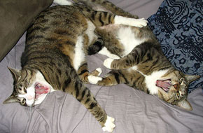

|

Adopt a Pet Today
If you're looking for a pet, consider a homeless stray or a pet from a shelter or pound. Thousands of cats and dogs are put to death every year in shelters simply because there are not enough homes. Kittens and puppies are cute, but the personalities of older cats and dogs are more predictable, so there are advantages to adopting them
